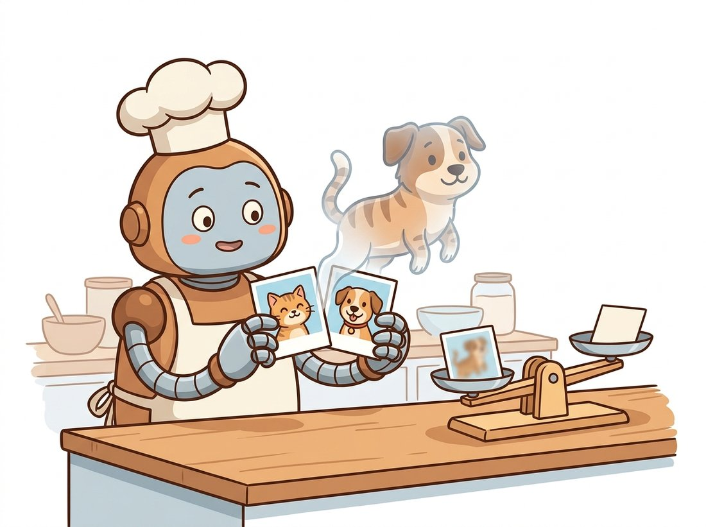

"You showed me the same cat ten thousand times, but flipped, cropped, recolored, and once spliced halfway into a dog. I no longer trust that a cat lives in the left half of the image, and I am better for it."
A Classifier That Stopped Memorizing Backgrounds
Data augmentation manufactures new training examples by applying label-preserving transformations, and it is the cheapest, highest-leverage regularizer in computer vision: the same model that overfits on raw data often generalizes well once augmentation forces it to ignore nuisance variation. This section climbs a ladder. At the bottom are the geometric and photometric transforms of Chapter 5 repurposed to teach invariance. In the middle is the critical rule that an augmentation must not change what the label means. At the top are the modern label-mixing methods, MixUp and CutMix, which blend the targets as well as the pixels, and the automated policies that ended the era of hand-tuning every transform.
The previous section established that the dataset is fixed and finite. Augmentation is how we make a finite dataset behave like a much larger one. The intuition is simple: a horizontally flipped cat is still a cat, so showing the network both versions teaches it that "cat-ness" does not depend on left-right orientation. Each transform we add encodes a piece of knowledge about which variations are irrelevant to the label. Done well, this is the difference between a model that memorizes its training set and one that generalizes; done carelessly, it teaches the model something false. We build the ladder one rung at a time.
1. The Geometric and Photometric Rung Beginner
The first family of augmentations reuses the warps and point operations you already know. The geometric transforms come straight from Chapter 5: horizontal flip, random crop and resize, small rotations, and mild affine shears. Each tells the network that the object's identity survives that transformation. The photometric transforms come from the point operations of Chapter 2: brightness, contrast, saturation, and hue jitter, plus Gaussian blur and added noise. These teach invariance to lighting and camera variation. The standard ImageNet training augmentation is just two of these (a random-resized-crop and a horizontal flip), and that pair alone is worth several points of accuracy.
from torchvision.transforms import v2
import torch
# The classic ImageNet training transform: random crop + flip, then normalize.
train_tf = v2.Compose([
v2.RandomResizedCrop(224, scale=(0.08, 1.0)), # zoom + reframe
v2.RandomHorizontalFlip(p=0.5), # left-right invariance
v2.ColorJitter(brightness=0.2, contrast=0.2, # lighting invariance
saturation=0.2, hue=0.05),
v2.ToDtype(torch.float32, scale=True), # uint8 -> [0,1] float
v2.Normalize([0.485, 0.456, 0.406], [0.229, 0.224, 0.225]),
])
# At validation time we DO NOT augment: deterministic resize + center crop.
val_tf = v2.Compose([
v2.Resize(232), v2.CenterCrop(224),
v2.ToDtype(torch.float32, scale=True),
v2.Normalize([0.485, 0.456, 0.406], [0.229, 0.224, 0.225]),
])train_tf pipeline stacks RandomResizedCrop, RandomHorizontalFlip, and ColorJitter so each epoch sees a varied view, while val_tf uses only a deterministic Resize and CenterCrop so its metric measures the model, not the random crop.Augmentation belongs to training only. Its job is to make training harder and more varied so the model learns robust features; the validation and test sets must stay deterministic so their metrics measure generalization rather than augmentation luck. A validation transform with randomness in it gives you a noisy, irreproducible number. The one principled exception is test-time augmentation, where you deliberately average predictions over several augmented views at inference to squeeze out a little extra accuracy, but that is an inference-time ensembling trick, not a substitute for a clean validation metric.
2. The Rule That Governs Everything: Respect the Label Beginner
Every augmentation is a bet that the transformation does not change the correct answer, and the bet is task-dependent. A horizontal flip is safe for "is this a cat?" but catastrophic for "which way is this arrow pointing?" or for reading text, where left-right orientation is the label. A vertical flip is fine for satellite imagery but absurd for street scenes, where the sky belongs on top. Aggressive color jitter is harmless for object recognition but destroys a task that depends on color, like grading the ripeness of fruit or classifying a traffic light. The single most important habit in augmentation is to ask, for each transform, "does this preserve the label for my specific task?"
The rule has a sharper edge for tasks with spatial labels. In detection and segmentation, a geometric transform applied to the image must be applied identically to the boxes or masks, or the supervision becomes wrong. Flip the image and the bounding boxes must flip too. This is why production augmentation libraries treat the image and its annotations as a single coupled object, a point the library shortcut at the end of this section makes concrete and which matters greatly for the detection pipelines of Chapter 23 and the segmentation masks of Chapter 24.
Who: a manufacturing-vision team training a model to read tiny embossed orientation arrows on metal parts, 2025. Situation: they copied a standard ImageNet augmentation recipe, including RandomHorizontalFlip, into their pipeline. Problem: training accuracy was fine, but the model confused left-pointing and right-pointing arrows in production, the one distinction the whole system existed to make. Decision: reviewing the augmentation list, the lead realized the horizontal flip was turning left arrows into right arrows while keeping the original label, teaching the model that orientation was irrelevant, the exact opposite of the task. Result: removing the horizontal flip (and adding small rotations and brightness jitter, which are genuinely label-preserving here) fixed the confusion within one retraining cycle. Lesson: there is no universal augmentation recipe. A transform that is the bread and butter of object recognition can be poison for a task where that exact symmetry carries the label. Audit every transform against your task before you trust the recipe.
3. Cutout, MixUp, and CutMix: Mixing the Labels Intermediate
The next rung of the ladder breaks the assumption that one training image carries one clean label. Three closely related methods, illustrated in Figure 21.2.1, push augmentation into the label space itself. Cutout masks a random rectangle of the image to zero, forcing the network to use the whole object rather than a single discriminative patch. MixUp takes two images and blends them pixel-wise, $\tilde{x} = \lambda x_i + (1 - \lambda) x_j$, and blends their one-hot labels identically, $\tilde{y} = \lambda y_i + (1 - \lambda) y_j$, with $\lambda$ drawn from a Beta distribution (a probability distribution on the interval $[0, 1]$ whose shape parameter controls whether the draws cluster near the ends, giving mostly one image, or near the middle, giving even blends). CutMix combines the two ideas: it pastes a rectangular patch from image $j$ into image $i$, and sets the label mix proportional to the patch's area fraction.
Why does blending labels help? Two reasons. First, it strongly regularizes: the network can no longer be fully confident on any single class, which discourages the overconfident, sharp decision boundaries that overfit. Second, it improves calibration, the agreement between a model's confidence and its actual accuracy, because soft targets teach the model to output soft probabilities. MixUp and CutMix are now standard in competitive image-classification recipes, including the ConvNeXt training procedure from Chapter 20. The implementation is remarkably short, and the illustration below makes the central idea vivid: when you blend two images, you blend their labels too.

import numpy as np
import torch
def mixup(x, y, num_classes, alpha=0.2):
"""MixUp: blend a batch with a shuffled copy of itself."""
lam = np.random.beta(alpha, alpha) # small alpha (0.2) -> lam near 0 or 1, mostly one image
idx = torch.randperm(x.size(0)) # random pairing within batch
mixed_x = lam * x + (1 - lam) * x[idx]
y1 = torch.nn.functional.one_hot(y, num_classes).float()
mixed_y = lam * y1 + (1 - lam) * y1[idx] # blend the labels too
return mixed_x, mixed_y
# Train with a loss that accepts soft targets (KL or soft cross-entropy):
# logits = model(mixed_x)
# loss = -(mixed_y * logits.log_softmax(dim=1)).sum(dim=1).mean()lam drawn from np.random.beta blends each image with a shuffled copy of the batch (x[idx]) and blends the one-hot labels by the same weight, so the training target becomes a soft distribution. The commented soft cross-entropy shows how the loss must accept those soft targets.The whole behavior of MixUp lives in one number, the Beta shape parameter alpha, and you can feel what it does in under a minute. Take one pair of images, then for each alpha in [0.1, 0.2, 0.5, 1.0, 4.0] draw lam = np.random.beta(alpha, alpha) a few hundred times and do two things: plot a histogram of the lam values, and display the blended image lam * x_i + (1 - lam) * x_j for one representative draw. Observe how at alpha = 0.1 nearly every lam lands close to 0 or 1, so each blend is almost a clean image with only a faint ghost of the other, while at alpha = 4.0 the draws pile up near 0.5 and you get the strong cat-and-dog double-exposure. The published default of alpha = 0.2 is deliberately gentle: most batches are nearly clean, with occasional hard blends. Then re-run Exercise 21.2.2 at a high alpha and you will usually see accuracy drop, because constant heavy blending is too aggressive a regularizer. This costs no training and no GPU, just numpy and one image pair, yet it makes the single most important MixUp hyperparameter concrete.
MixUp images look genuinely terrible to a human: a ghostly cat-dog superimposition that no photographer would ever shoot and no caption would ever describe. The MixUp authors freely admitted the inputs are "unnatural" and confessed mild surprise that training on these visual nonsense-blends works at all, let alone that it reliably beats training on clean images. It is a useful reminder that a network's idea of a helpful training example and a human's idea of a sensible photograph are two very different things.
4. Automated Policies: RandAugment and TrivialAugment Intermediate
Once you have a dozen possible transforms, each with a magnitude knob, the search space of "which ones, how strong, in what order" is enormous. The first serious attempt, AutoAugment, used reinforcement learning to search for an optimal policy, but the search itself cost thousands of GPU hours. The field then discovered that almost all of that expense was unnecessary. RandAugment collapses the policy to two interpretable numbers: $N$, how many random transforms to apply per image, and $M$, a single global magnitude that scales all of them. TrivialAugment goes further and removes even those: it applies exactly one randomly chosen transform at a randomly chosen magnitude per image, with zero tuning, and matches or beats the heavily-searched policies.
The arc from AutoAugment to RandAugment to TrivialAugment is a microcosm of a broader lesson: expensive automated search frequently rediscovers what a tiny, well-chosen random policy already provides. TrivialAugment has no hyperparameters to tune and yet competes with policies that cost thousands of GPU hours to find. For a new project, the rational default is to start with TrivialAugment or RandAugment at a moderate magnitude, measure, and only invest in tuning if the data clearly demands it. Augmentation strength is itself a regularizer: increase it when overfitting, reduce it when underfitting.
You almost never implement RandAugment, MixUp, or CutMix by hand in production. torchvision's v2 transforms ship all of them, and crucially they transform images, boxes, and masks together. The from-scratch versions above (and a hand-rolled RandAugment, which is roughly 80 lines) collapse to:
from torchvision.transforms import v2
import torch
train_tf = v2.Compose([
v2.RandomResizedCrop(224, antialias=True),
v2.RandomHorizontalFlip(),
v2.RandAugment(num_ops=2, magnitude=9), # the whole policy in one line
v2.ToDtype(torch.float32, scale=True),
v2.Normalize([0.485, 0.456, 0.406], [0.229, 0.224, 0.225]),
])
# MixUp / CutMix operate on the batch (collated tensor + integer labels):
cutmix_or_mixup = v2.RandomChoice([
v2.MixUp(num_classes=1000),
v2.CutMix(num_classes=1000),
])
# for images, labels in loader: images, labels = cutmix_or_mixup(images, labels)v2.RandAugment(num_ops=2, magnitude=9) replaces the hand-rolled policy on one line, and v2.RandomChoice over v2.MixUp and v2.CutMix applies the batch-level label mixing of Code Fragment 2 automatically. The v2 API also transforms boxes and masks in lockstep with the image, which the from-scratch version cannot.The library handles the magnitude scaling for every operation, the Beta sampling for the mixing weight, the soft-label bookkeeping, and (when you use the v2 API on detection or segmentation targets) the synchronized transformation of bounding boxes and masks. For pipelines that augment boxes and masks heavily, Albumentations is the production-standard alternative with the same coupling guarantee.
The frontier of augmentation in 2024-2026 is increasingly generative. Rather than perturbing existing images, teams now synthesize new ones with the diffusion models of Chapter 33 and text-to-image systems of Chapter 34, generating rare classes, hard poses, or under-represented conditions on demand. Work on synthetic-data training (for example training classifiers on diffusion-generated images, and using generative models to balance long-tailed datasets) shows measurable gains when the synthetic distribution is anchored to the real one. This closes a loop that runs through the whole book: the geometric augmentation born in Chapter 5 becomes the generative data engine of Chapter 37, where models manufacture their own training data and the central question becomes how to keep that synthetic data faithful to reality.
For each of the following tasks, list every transform from this section (horizontal flip, vertical flip, rotation, color jitter, MixUp) and mark it label-preserving or label-breaking, with a one-line justification: (a) classifying cat versus dog, (b) reading house numbers from photos, (c) classifying skin-lesion type from dermatology photos, (d) detecting which way a conveyor belt is moving from a single frame. There is no single right answer; the reasoning is the point.
Train a small CNN on CIFAR-10 twice with an identical schedule: once with standard crop-and-flip augmentation, once additionally with the MixUp function from subsection 3. Report final test accuracy for both, and also report a calibration measure (for example the gap between average confidence and accuracy, or expected calibration error). You should observe MixUp improving calibration and usually accuracy. Write a short paragraph relating the calibration improvement to the soft-target argument in subsection 3.
Using RandAugment from torchvision, train the same model at magnitudes $M \in \{0, 5, 9, 15, 20\}$ on a dataset of your choice and plot train and validation accuracy against $M$. Identify the magnitude where validation accuracy peaks, and explain the shape of the curve: why too little augmentation overfits and too much underfits. Relate the optimum to the dataset size, and predict how the sweet spot would shift if you had ten times more training data.